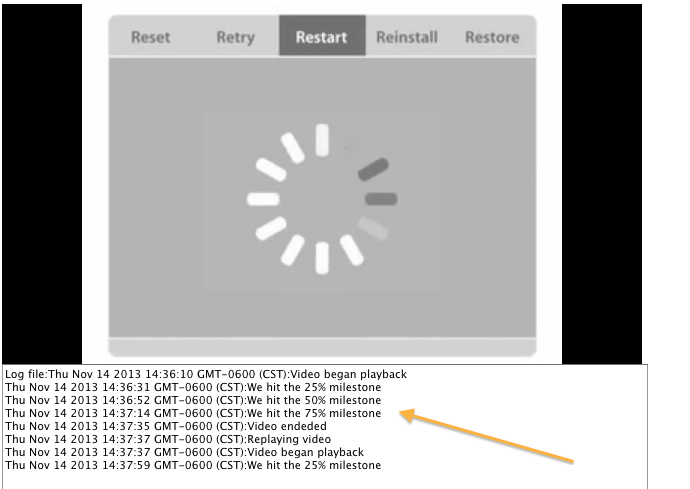

You can use the following code sample to help you get started start creating your playback experience with Ooyala Cross-Device Resume and Google IMA ads integration and adding Player Token authentication.
You can inspect this multi-feature code sample to help you get started working with the HTML5 Player APIs and EVENTS. This code illustrates how to use Cross-Device Resume with Ooyala Secure Token Authentication and Google Interactive Media Ads (IMA). This sample has two basic parts:
How to Run the Sample
To run this code sample:
The following sections describe some of the key features and files you will use in this code sample.
Server-Side Code
For this code sample, we run the server in an CodeIgniter framework, which is provided as part of the code sample in our GitHub repository. The GitHub repository contains the PHP-based server-side code (CodeIgniter app) that you can use to run the samples. Designed to help you get up and running in very little time, the sample CodeIgniter app is already integrated with the Ooyala PHP SDK (/application/third_party/php-v2-sdk ) so there is no need to add anything else.If you already have a server setup, you can adapt the code to your use. Or if you just want to run the code sample, you can clone the repository and copy it to your server. You don’t need to implement the PHP framework, as we provide it as part of the code sample.
What is CodeIgniter?
CodeIgniter is a framework in PHP designed to have as low overhead as possible. It follows an Model-View-Controller (MVC) pattern, where you pass information to the view in the following way:$this->view->load("name_of_the_view", $data)The relevant files are structured as follows:
/application/assets/config/controllers/views/libraries/models/third_party
The third_party directory contains extra files such as the Ooyala SDK.
CodeIgniter follows a URL path such as the following:
"base/controller/view/args"Client-Side Views
The code sample includes multiple client web pages or views illustrating each feature and a seventh code sample that shows all the features working in combination. To implement each client page, you will need all the standard elements that you normally use such as your API Key and pcode (for details, see Your API Credentials), and so forth.
To explore these code sample views, in GitHub, go to:
code-samples/api-examples/CodeIgniter_app/application/views/The code samples include:
The following sections describe the implementation of each of these client-side views.
Ooyala Player Token Client Code
The token.php file implements Ooyala Player Token authentication content protection.
How the Player Token Sample Works
In this Player Token sample, we use the following Player V3 APIs and parameters.Google IMA Client Code
The google_ima.php sample view introduces the use of the google-ima-ads-manager on the client-side to handle the insertion of various types of ads into a player. This implementation shows the use of a companion ad with a player.
How the Google IMA Sample Works
In this Google IMA sample, we use the following Player V3 APIs and parameters.Before you start working with the Ooyala Google IMA sample:
Cross Device Resume (XDR) Client Code
The cross_resume.php file code implements a client-side version of Ooyala Cross Device Resume (XDR) as a sample. We have implemented a simple version of XDR so you can see how it works. Cross-Device Resume, of course, is designed to work with our mobile SDKs and from the desktop or mobile device to an appropriate TV type. For more information about XDR, see “ "Player for Cross Device Resume."
How the XDR Sample Works
In implementing XDR for this sample, we limited the code to perform XDR from desktop to desktop for simplicity. XDR supports start and resume across mobile devices, desktops, and XTV enabled TVs. For more information about XDR, see “ Player for Cross Device Resume.”
In this XDR client sample, we pass the playhead time from the PHP server to var playheadTime. We create the player with OO.Player.create () function and set the embedToken parameter and pass the playheadTime to the initialTime parameter.
Message Bus Event Handling
One important feature of Player V3 is its message bus event handling mechanism. This code sample includes the use of the V3 message bus to implement some event handling functions.
message_bus.php - Used for the set up of event handling.
message_bus_advanced.php - Illustrates the set up of event handling and the display of event milestones in an area beneath the player.
These files implement event handling code to demonstrate the following:
Video start and play
Video pause
Video reached 25% milestone
Video reached 50% milestone
Video reached 75% milestone
Video complete
Ad break started
Ad request made
Ad played through 100%
Ad break finished
Here is a portion of the code for handling these types of events from the code-samples/api-examples/CodeIgniter_app/application/assets/javascript/simple_milestones.js file. In this code snippet, we subscribe to the PLAYING event. This javascript file uses the CONTENT_TREE_FETCHED, PLAYING, PLAYHEAD_TIME_CHANGED, and PLAYED events. For a full list of the message bus OO.EVENTS that you can use in your code, see Player Message Bus Events.
this.mb = window.mb;
.
.
.
this.mb.subscribe(OO.EVENTS.PLAYING, "func2", function (eventName, arg1, arg2) {
if (videoEnded) {
// Reset all values
// We are asuming we hit replay on the same video
videoStarted = false;
_25per = false;
_50per = false;
_75per = false;
videoEnded = false;
write("Replaying video");
}
.
.
.
In the message_bus_advanced.php file we provide a div id called logName to create a text area where we display the milestone events collected from the simple_milestones.js. In this script we subscribe to OO.EVENTS.PLAYING and use OO.EVENTS.PLAYHEAD_TIME_CHANGED to account for scrubbing. When you run the sample, you should see the output of the event handling tasks from the .js logic written to the screen, like so:
Multi-Feature Sample
Our public GitHub repository also contains the multi-feature_sample.php file. This file contains the server side code and a client web page that combines all the client-side code for implementing all of the features described in the prior sections so you can see a single working sample that demonstrates ads integration with Google IMA, Ooyala Cross-Device Resume, and authentication with the Ooyala Player Token. It also includes the PHP Server-Side code to handle requests.